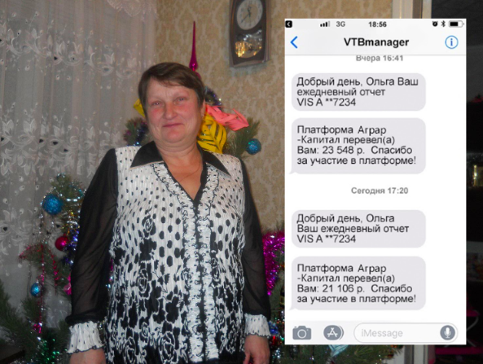

Россия стала мировым лидером в аграрной индустрии, вытеснив Китай. Как каждый россиянин может заработать на стремительном росте промышленности со своего смартфона?
Как Россия вытеснила Китай на мировом рынкеСейчас Китай, как бывший мировой лидер в аграрной промышленности, переживает непростые времена. Из-за эпидемии коронавируса люди со всех стран мира отказываются покупать китайские товары, боясь заразиться вирусом. Ситуация настолько сложная, что на данный момент Китай не может покрыть даже внутренние вопросы в пищевой и сельскохозяйственной промышленности.
Сложившаяся ситуация оказалась благоприятной для экономики России. Теперь РФ не только заняла часть внутреннего рынка Китая, но и вытеснила его на мировой арене в сфере аграрной промышленности. Данная ситуация позволяет простым россиянам получать пассивный доход от государства. Как именно? Наши журналисты подробно изучили этот вопрос…
Почему аграрная промышленность России стала “лакомым кусочком” для инвестицийИз-за повышенного спроса мирового рынка на российские товары, ожидается масштабное инвестирование в пищевую и сельскохозяйственную промышленность РФ и обучение нового персонала. Все это укрепляет позиции акций сельхоз сегмента РФ и экономики РФ в целом.
По причине ускоренного масштабирования производства российских товаров с января 2020 года запущен проект “АграрКапитал” и строительство 76 заводов для расширения аграрной промышленности РФ
Что такое “АграрКапитал”?“АграрКапитал” - это специальная онлайн-платформа для торговли акциями российских промышленных заводов. Пользователи программы получают возможность приобрести желаемое количество акций и запустить автоматическую торговлю на мировом рынке. По причине того, что мировые крупные инвесторы уже видят выгоду в российской аграрной промышленности, цены на акции растут с большой скоростью, несмотря на то, что строительство большинства заводов только началось.
Как россияне начали зарабатывать через “АграрКапитал”Сейчас проект “АграрКапитал” открыт для инвестиций всех россиян. Таким образом, акции аграрной промышленности доступны для торгов жителей России. Но в виду того, что как только заводы будут построены, акции захотят выкупить монополисты, цены на акции вырастут в 4-5 раз. Поэтому данное мероприятие гарантированно дает возможность россиянам умножить имеющийся капитал.
Курс на акции проекта “АграрКапитал” уже начал расти, начиная со 2 февраля, и россияне уже зарабатывают на этом. Однако, акции еще можно приобрести по цене, доступной россиянину со среднестатической зарплатой.
- Доступен каждому. Стать инвестором государственной аграрной промышленности может любой гражданин России. Для этого нужно всего лишь пройти простую регистрацию. Сумма инвестиции может быть небольшой и даже равна сумме обыкновенной микроволновки.
- Простота. Участники проекта “АграрКапитал” разработали удобное приложение для торгов аграрными акциями, интуитивно понятное каждому — не имея знаний в области экономики и торговли акциями, человек сможете обучиться менее чем за 10 минут и начать зарабатывать.
- Удобство. Алгоритм все сделает за человека — программе не нужно помогать или делать какие-то специальные действия.
- Отсутствие рисков. 94% сделок закрываются в пользу владельца акциями “АграрКапитал” из-за нынешней экономической ситуации и заинтересованности иностранных инвесторов скупать российские аграрные акции.
- Надежность. Платформа “АграрКапитал” является государственной и работает при поддержке правительства, поэтому ни один участник не рискует ничем.
- Перейдите по этой ссылке на официальный сайт платформы “АграрКапитал”.
- Зарегистрируйтесь на сайте, внимательно и правильно заполнив все поля формы.
- Дождитесь звонка от менеджера платформы на ваш мобильный номер телефона и подтвердите регистрацию.
- Выберите желаемую сумму и получите первую выплату уже к вечеру этого дня.